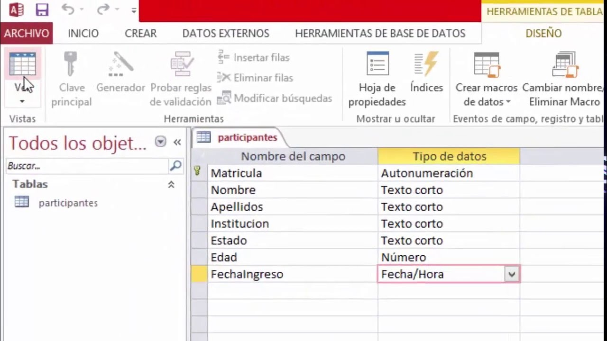
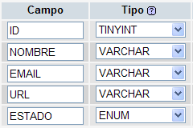
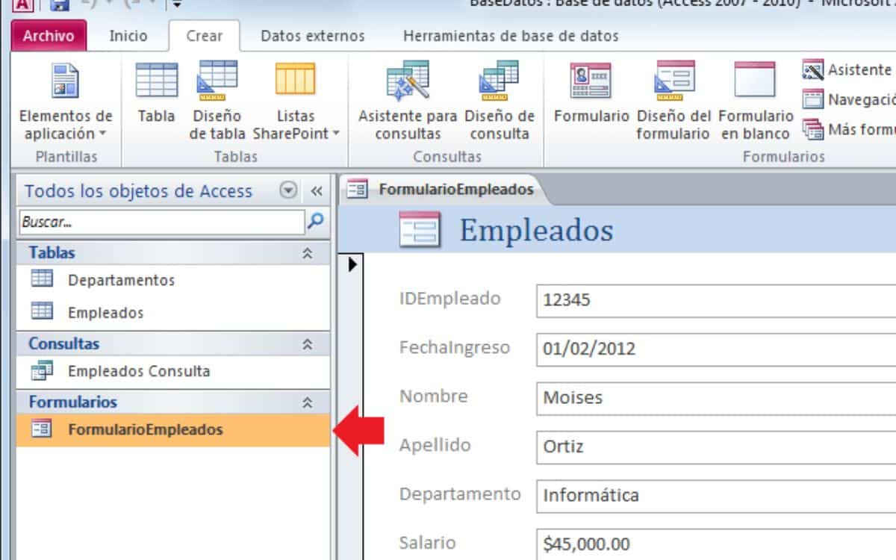
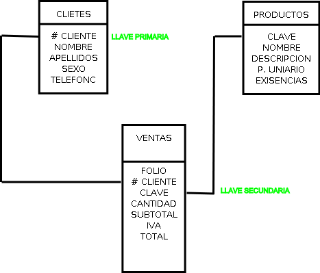

Bienvenido
A su curso Access:
Microsoft Access
Conceptos Básicos de Microsoft Access
Microsoft Access es una herramienta poderosa para gestionar bases de datos de manera eficiente. A continuación, exploraremos los temas fundamentales que necesitas conocer.
Las tablas son el componente principal de Access. Permiten almacenar datos de manera estructurada mediante filas y columnas.
Una clave primaria garantiza la unicidad de los registros dentro de la tabla.
Los tipos de campo en Access determinan la naturaleza de los datos que se pueden almacenar en una tabla.
Algunos tipos comunes incluyen Texto, Número, Fecha/Hora, y Booleano.
Las relaciones permiten conectar diferentes tablas a través de campos comunes.

En una relación uno a uno, cada registro de una tabla está relacionado con un solo registro de otra tabla.
En una relación uno a muchos, un registro en una tabla puede estar relacionado con múltiples registros en otra tabla.
En una relación muchos a muchos, varios registros en una tabla pueden estar relacionados con varios registros en otra tabla.
Los formularios en Access permiten una entrada de datos más amigable y organizada para los usuarios.
Las consultas en Access permiten extraer información específica de una o varias tablas.

Permite extraer datos específicos de una o varias tablas aplicando criterios.
Modifica datos en la base de datos. Puede actualizar, eliminar, anexar o crear tablas.
Solicita un valor al usuario al ejecutarse para filtrar los resultados.
Las claves primarias y foráneas permiten establecer relaciones entre tablas y garantizar la integridad de los datos.
Creación de Tablas en Access
Ejercicio 1: Crear Tabla
Resumen de la Tabla Creada
Formulario de Ingreso de Datos
Datos Ingresados
Cuestionario de conceptos Básicos de Access
¡Bienvenidos al quiz interactivo sobre la creación de bases de datos en Microsoft Access! En este ejercicio, pondremos a prueba tus conocimientos sobre la creación y gestión de bases de datos utilizando Access. A lo largo de las preguntas, se cubrirán conceptos como tablas, relaciones, claves primarias y foráneas, consultas y formularios, todos los cuales son esenciales al trabajar con bases de datos en Access.
Este quiz está dirigido a aquellos que están aprendiendo o desean reforzar su comprensión de cómo usar Microsoft Access para organizar y gestionar datos de manera efectiva. ¡Es el momento perfecto para aplicar lo que has aprendido y probar tus habilidades! Si alguna pregunta te resulta difícil, no te preocupes, las respuestas te ayudarán a comprender mejor el tema.
¡Comencemos y veamos qué tanto sabes sobre la creación de bases de datos en Access!
Cuestionario de Microsoft Access
Ejemplo de Creación de Base de Datos en Access Clientes
¡Hola a todos! Bienvenidos a este tutorial donde aprenderemos a crear una base de datos desde cero en Microsoft Access. A lo largo del video, exploraremos los pasos esenciales para diseñar tu propia base de datos, creando tablas para almacenar información, formularios para facilitar la entrada de datos y reportes para visualizar esos datos de manera organizada.
Este video está diseñado especialmente para principiantes, así que no te preocupes si nunca has trabajado con Access antes; aquí te guiaré en cada paso del proceso. ¡Prepárense para sumergirse en el mundo de las bases de datos y dar el primer paso hacia la gestión efectiva de la información! Así que, ¡empecemos!
Recursos Interactivos
Esta sección está diseñada para que explores Access de manera dinámica y sin saturación de contenido. ¡Aprovecha estos recursos para convertirte en un experto en bases de datos! 🚀
- Todo
- Mini tutoriales
- Casos de Uso
- Descargables

{kind=link}
{kind=link}
DESAFÍOS Y RETOS
¡Prepárate para poner a prueba tus conocimientos con Access! En esta sección, encontrarás juegos y retos interactivos diseñados para desafiarte y ayudarte a mejorar tu dominio de las bases de datos. ¿Estás listo para aceptar el reto?
Juego 1: Identificar el Tipo de Campo
Asocia los tipos de datos correctos con situaciones específicas en Microsoft Access. ¡Demuestra tus conocimientos!
Juego 2: Identificar la Relación que tienen las Tablas
Analiza las tablas de una base de datos y encuentra cómo se relacionan entre sí para establecer conexiones adecuadas.
Reto 1: Corregir Errores en la Base de Datos
Identifica y soluciona los errores comunes en una base de datos, como registros duplicados o datos faltantes.
Reto 2: Bienvenido al Quiz de Access
Pon a prueba tu conocimiento con un cuestionario sobre Access. ¡Ve qué tan bien lo sabes!
EXAMEN
¡Bienvenido al Examen de Microsoft Access!
Este examen está diseñado para evaluar tus conocimientos sobre las principales funciones y características de Microsoft Access, una poderosa herramienta para la creación y gestión de bases de datos.
A lo largo de 10 preguntas, pondremos a prueba tu comprensión de conceptos clave como tablas, consultas, formularios, relaciones y más. El tiempo límite es de 6 minutos, así que asegúrate de administrar bien tu tiempo y responder cuidadosamente cada pregunta.
Recuerda:
- Lee cada pregunta con atención antes de seleccionar tu respuesta.
- Al finalizar, obtendrás tu calificación y, si alcanzas una nota de 7 o más, recibirás un certificado que valida tu conocimiento.
¡Buena suerte!
Confía en tus habilidades y da lo mejor de ti. ¡Este es tu momento de demostrar todo lo que sabes!